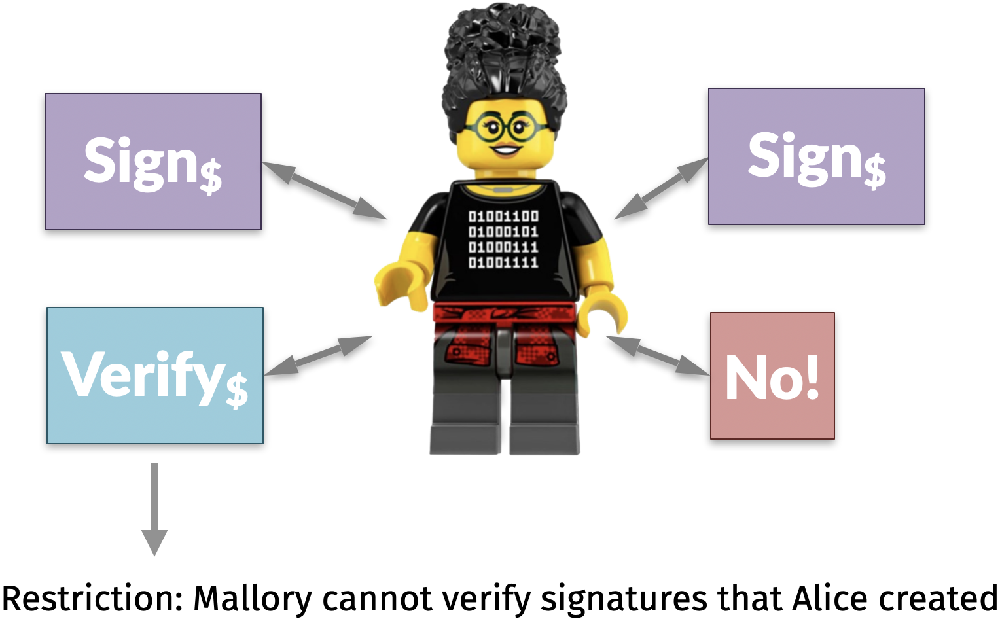
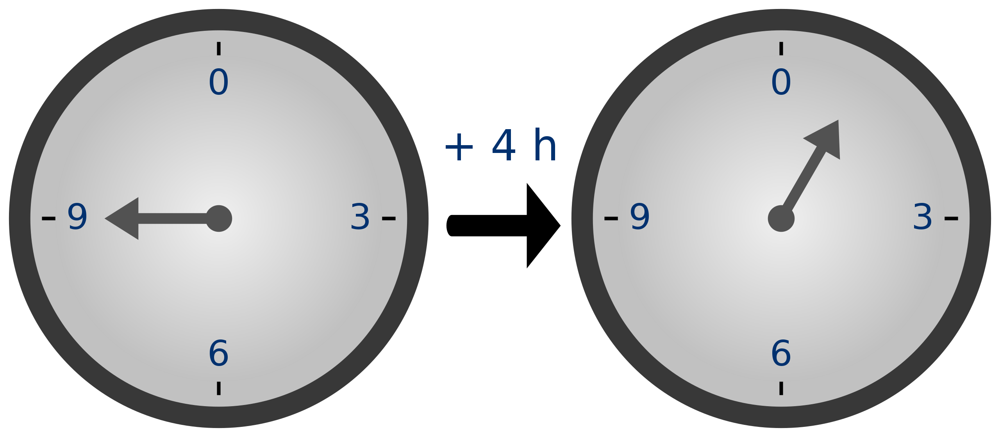
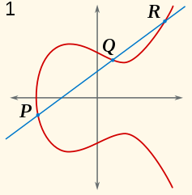
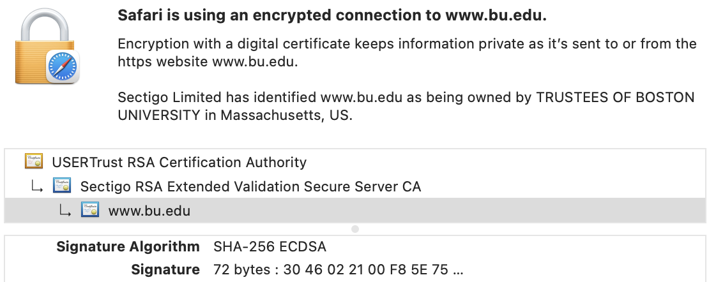

6 Digital signatures
Announcements
- Please pick up your card
- Lab 4 on this week’s reading: NBFMG sections 1.2–1.4 (pages 32-42)
- Homeworks due on Gradescope
- HW 2 due today at 8pm (late deadline is today at 10pm, based on the NIST beacon)
- HW 3 due Wed 9/30 at 8pm
outputValue first character |
Late deadline | |
|---|---|---|
0, 1, 2, 3 |
Wednesday 10pm | |
4, 5, 6, 7, 8, 9, A, B |
Thursday 10pm | |
C, D, E, F |
Friday 10pm |
Learning outcomes
By the end of today’s lecture, you will learn:
- The similarities and differences between digital signatures and MACs
- Which hard math problems we use as the basis of digital signatures
- How to construct Schnorr digital signatures
6.1 Crypto for data integrity
Unit 1 of this course is about protecting data integrity. More specifically, this week we are focused on the questions of authenticating people and data.
A major concern in the subject [of cryptography] is that of authentication. How do you know some data is correct (data authentication), and how do you know an entity is who they claim to be (entity authentication).
– Nigel Smart, Cryptography Made Simple
So far in this course, we have discussed two crypto primitives for data integrity.

Both crypto primitives require unforgeability when Alice and Bob communicate.
| Alice | Bob | |
|---|---|---|

|
\(\quad \Longleftrightarrow \quad\) |

|
The purpose of this security requirement is to stop Mallory from being a meddler-in-the-middle (abbreviated MitM). She cannot add or change messages in transit between Alice and Bob.
| Alice | Mallory | Bob | ||
|---|---|---|---|---|
|
|
\(\longrightarrow\) |

|
\(\longrightarrow\) |
|
For now:
- Mallory can drop messages; we will address data availability in Unit 2
- Mallory can read messages; we will address data confidentiality in Unit 3
But any attempt by Mallory to add/change messages in transit must be detected by Bob!
- No matter how many messages Alice sends: she could send a thousand messages \(m_1, m_2, \ldots, m_{1000}\) or more
- No matter which messages Alice sends or Mallory forges: Mallory could even choose all 1000 messages, and still Mallory cannot sign any other message \(m^*_{1001}\) that Alice never sent
Signatures vs. MACs
Let’s compare these primitives.
Digital signature
A digital signature allows Alice, when given any message \(m\), to append a sequence of bits called a signature that satisfies two properties (stated informally here).
- Correctness: Everyone can verify whether Alice created the signature
- Unforgeability: Only Alice can produce the signature, and it is bound to \(m\)
To satisfy the unforgeability goal, Alice must have something that the rest of the world does not. We call this special something a “secret key.”
Message authentication code
A MAC allows Alice, when given any message \(m\), to append a sequence of bits called a tag that satisfies two properties (stated informally here).
- Correctness: Bob can verify whether Alice created the tag (and vice-versa)
- Unforgeability: Only Alice and Bob can produce the tag, and it is bound to \(m\)
To satisfy the unforgeability goal, Alice and Bob must have something that the rest of the world does not. We call this special something a “symmetric secret key.”
Question. What are the differences between digital signatures and MACs?
Creation: Only Alice can create a digital signature. Both Alice and Bob can create a MAC.
Verification: A digital signature can be verified by anyone in the world. A MAC can only be verified by the receiver Bob.
Receiver authentication: Because a signature can be verified by anyone, it will not convince Bob that he was the intended target of the message. A MAC does convince Bob that he is the intended target because only Alice and Bob know the symmetric key.
Deniability vs non-repudiation: Alice’s MAC tags only make sense to Bob; she can deny to anyone else that she even sent the message. By contrast, Alice cannot deny (or repudiate) having created a digital signature.
Keys: A MAC assumes that Alice and Bob have one symmetric key that they have agreed upon. A digital signature does not.
6.2 Public key cryptography
In contrast to MACs that use one symmetric key, digital signatures use two asymmetric keys:
- A secret key \(\color{red}{sk}\) known only by Alice and used for signing
- A public key \(\color{green}{pk}\) known to the whole world and used for verification
This one change leads to all five differences we between digital signatures and MACs, even though their formal definitions are otherwise similar.

Definition 6.1 (Digital signatures) A digital signature contains three operations.
KeyGen: returns a randomly-chosen secret key \(\color{red}{sk}\) and public key \(\color{green}{pk}\)Sign\({}_{\color{red}{sk}}(m)\): returns a digital signature \(\sigma\)Verify\({}_{\color{green}{pk}}(m, \sigma)\): returns a booleantrueorfalse
All three operations should be efficiently computable. Moreover, the digital signature must satisfy two requirements: correctness and EU-CMA.
Correctness means that \(\texttt{Verify}_{\color{green}{pk}}( m, \text{Sign}_{\color{red}{sk}}(m))=\)
truefor all keys and messagesExistential unforgeability under a chosen message attack (EU-CMA) uses the same thought experiment game that we created for MACs, and we additionally give Mallory the public key \(\color{green}{pk}\)

The notation $ in the EU-CMA figure is my shorthand for saying that the game should choose the secret key \(\color{red}{sk}\) at random (for instance, by flipping coins) and that the Sign box should be hard-coded with this key. Mallory does not see this key; she only receives \(\color{green}{pk}\).
Constructing digital signatures
Let’s try to make a digital signature. It turns out that this is a challenging problem, and the tools we have built so far in this course will not suffice.
A digital signature must satisfy the following requirements:
- Given the public key, it is difficult to solve for a valid message-signature pair \((m, \sigma)\)
- Given the public key, it is easy to verify whether a message-signature pair is valid, if Alice has already created \((m, \sigma)\)
So: we need to find a math problem that is difficult to solve but easy to verify.
- Unfortunately, we do not know for certain whether any such math problems exist!
- So we do the next best thing: build digital signatures from math problems that we believe to have this property of “difficult to solve but easy to verify.”
Crypto is a social science that masquerades as a mathematical science.
Question. Can you think of a math problem with this property?
One such problem is factoring.
- Given a composite integer \(N\) that is the product of two primes, it is difficult to find the primes \(p\) and \(q\) such that \(N = pq\).
- If I told you the prime factors, you could easily multiply them together to verify whether \(p q = N\).
In the late 1970s, Rivest, Shamir, and Adleman discovered how to use factoring as the basis of a digital signature scheme. It is named RSA in their honor. I’ll write the details of that signature scheme in the lecture notes.
However, RSA is not used as often today because
- It is big: keys and ciphertexts are hundreds of bytes in size
- It is slow: signing takes around 1 millisecond
6.3 Discrete logarithms
The most common standard for digital signatures is called the digital signature algorithm, or DSA.
- It is based on a different math problem that is difficult to solve but easy to verify: taking logarithms
- Wait, hang on, this doesn’t sound right… let’s check whether this is actually a hard math problem
Interactive question. Can you find an integer \(x\) such that \(5^x = 125\)?
- 2
- 3
- 4
- 5
Answer. Taking logarithms to find \(x = \log_5(125)\) is easy over the real numbers \(\mathbb{R}\).
Instead, we will use modular (or clock) arithmetic. When given two integers \(n\) and \(p\), the notation \(n \bmod{p}\) means to calculate the remainder that occurs when you divide \(n\) by \(p\).

It turns out that if you use modular arithmetic, then it is practically infeasible to compute discrete logarithms.
Interactive question. Can you find an integer \(x\) such that \(5^x \pmod{7} = 2\)?
- 2
- 3
- 4
- 5
Answer. This is tedious to calculate. With some computational effort, we can calculate the truth table of \(f(x) = 5^x \bmod{7}\) in the forward direction by multiplying.
| \(x\) | \(f(x)\) |
|---|---|
| 1 | 5 |
| 2 | 4 |
| 3 | 6 |
| 4 | 2 |
| 5 | 3 |
| 6 | 1 |
| 7 | 5 |
With this table, can you now solve the question from above?
It turns out the act of exponentiation modulo a prime number is:
Invertible. In fact it is a permutation over the inputs from \(1\) to \(6\), because each number between \(1\) and \(6\) occurs exactly once as a possible output. (And the function cycles after that, so we’ll ignore any larger inputs.)
This idea generalizes to larger prime numbers besides \(p = 7\): the function \(f\) is a permutation over the integers from \(1\) to \(p-1\).
Computationally difficult to invert… at least if we choose a prime modulus \(p\) that is large enough.
(There is one caveat: for some math reasons that I will skip, we must take only half of the truth table for even values of \(x\).)
The punchline here is that for modular arithmetic: exponentiation is easy but logarithms are hard!
Elliptic curves
There is another way to make “exponentiation” easy but “logarithms” hard. It uses another kind of math object called an elliptic curve, which is just a cubic equation \(y^2 = x^3 + ax + b \bmod{p}\).
Rather than multiplying numbers, we’re going to make a new kind of arithmetic where we can “multiply” points in space. I’ll skip the math details since they are strange, but the punchline is the same: it is another math problem where exponentiating is easy but the inverse is practically impossible.

[Image source: Wikipedia]Elliptic curve discrete logarithm assumption: If \(G^x = Y\) and Mallory is given the two points \(G\) and \(Y\), then it is computationally infeasible for her to find the discrete logarithm \(x\).
A few comments about this assumption:
- All of the exponentiations and logarithms in today’s lecture are done modulo a prime number, but for simplicity I’m going to stop writing that explicitly from now onward.
- The base \(G\) of the logarithm is publicly known to all. It also must satisfy a few mathematical requirements for this assumption to be hard; I’ll skip the details since they are not relevant to the goals of today’s class.
In fact, the elliptic curve version of the discrete logarithm problem is really hard to solve, even harder than factoring (as far as we know). As a result:
- The act of computing a digital signature is faster: closer to microseconds (\(10^{-6}\) seconds) than milliseconds (\(10^{-3}\) seconds).
- We can get away with smaller keys and signatures: they can be 256 bits (32 bytes) in size, just like SHA-256, rather than 2048 bits (256 bytes) in size.

You can see an image like this one by clicking on the lock icon 🔒 in your web browser.
The important thing to remember here is that when doing modular arithmetic:
- Exponentiation \(Y \gets G^x\) is easy to calculate
- A logarithm \(x = \log_G(Y)\) is hard to calculate… and for large enough \(p\), it is one of those “energy of the sun” type problems
6.4 Schnorr signatures
How can we form a digital signature algorithm based on the fact that discrete logarithms are hard?
Here is an idea for KeyGen.
- Secret key: sample an exponent \({\color{red}{x}}\) uniformly at random
- Public key: given a base \(G\), publish \({\color{green}{Y}} = G^{{\color{red}{x}}}\) as the public key
Why does this work?
- Given \({\color{red}{x}}\), calculating \({\color{green}{Y}}\) is easy (Alice can exponentiate)
- Given \({\color{green}{Y}}\), calculating \({\color{red}{x}}\) is hard (Mallory cannot solve a discrete logarithm)
For the rest of today’s lecture, I will use lowercase letters to denote exponents and uppercase letters to denote bases (which can be numbers or elliptic curve points).
There are a few digital signature schemes that can be designed using keys of this form.
One of them is a NIST standard called the digital signature algorithm, or DSA. If you use an elliptic curve group to build it, then we refer to the construction as ECDSA. (Note: you will explore ECDSA signatures in Homework 3.)
Another scheme, which is related to but slightly simpler than ECDSA, is called Schnorr signatures.
I reproduce the construction of Schnorr signatures below; it is adapted from the presentation on Wikipedia.
Construction
KeyGenworks as stated above: the signer creates a secret exponent \({\color{red}{x}}\) and publishes the corresponding public key \({\color{green}{Y}} = G^{\color{red}{x}}\).The signer can
Signa message \(m\) as follows:- Choose a random one-time exponent \(k\)
- Compute \(R = G^{k}\)
- Compute \(e = H(R, m)\), where \(H\) is a cryptographic hash function
- Compute \(s = k − {\color{red}{x}} e\)
The signature is the pair \(\sigma = (s, e)\).
The receiver can
Verifythe claimed signature \(\sigma = (s, e)\) of a message \(m\) as follows:- Compute \(R^* = G^{s}{\color{green}{Y}}^{e}\)
- Compute \(e^* = H(\bar{R}, m)\)
If \(e^* = e\), then return
true(the signature is valid). Otherwise, returnfalse(the signature is a forgery).
Note that the Sign algorithm is randomized. If you request to sign the same message twice, you will likely get two different signatures back in response.
Nevertheless, all possible signatures will correctly be accepted by the deterministic algorithm Verify.
Security
Why does the Schnorr construction satisfy the requirements of a digital signature?
Correctness: If all parties are honest, it is straightforward math to check that the
Signalgorithm produces a signature that passes theVerifyalgorithm. Try writing it out to convince yourself of this fact!Unforgeability: The Schnorr signature algorithm has cleverly interwoven two hard problems here – the difficulty of solving discrete logarithms and the random oracle property of the cryptographic hash function \(H\). I will only give some intuition about the unforgeability argument here.
Put yourself in the shoes of Mallory. How would you forge a signature of a message \(M\)? There is a circularity here.
If Mallory picks \(s\) and \(e\) first, then that determines the value of \(\bar{R}\) in step 1. But the cryptographic hash function in step 2 acts like a random oracle, and it is extremely unlikely that \(H(\bar{R}, m)\) happens to equal Mallory’s chosen \(e\).
If Mallory picks \(\bar{R}\) first, that determines the value of \(e = H(\bar{R}, m)\) in step 2. Returning to step 1, she needs to solve the equation \(G^{s} = \bar{R}/Y^e\) for the only remaining unknown value: \(s\). But that requires solving a discrete logarithm problem!
This is just an informal argument. Please note that there is a formal math proof that Schnorr signatures achieve EU-CMA, even though I am not showing it here.
Size of Schnorr signatures
Finally, let’s talk about the size of Schnorr digital signatures (since this was part of the motivation of moving away from RSA signatures).
- Using elliptic curve groups, the discrete logarithm problem is hard if the secret key \(x\) is be 256 bits, or 32 bytes, in length
- The two numbers \(s\) and \(e\) in the signature are each 32 bytes in length, so the overall size of a Schnorr signature is 64 bytes
By comparison: ECDSA signatures are 72 bytes long, and RSA signatures are a few hundred bytes in size.
Summary
At this point, we have five cryptographic tools at our disposal:
Hash functions like SHA-2 and SHA-3 (and password hash functions) that satisfy preimage resistance, collision resistance, puzzle friendliness, and act like a random oracle
Message commitments that act as the digital equivalent of putting a message in an envelope; they are binding and hiding
Randomness and pseudorandomness to generate secret keys and other random-looking data, either in an unpredictable or repeatable manner
Message authentication codes like HMAC that allow Alice and Bob to verify that they are communicating with each other and satisfy existential unforgeability under a chosen message attack
Digital signatures like RSA, ECDSA, and Schnorr signatures that satisfy EU-CMA if it is difficult to factor large numbers or find discrete logarithms
Looking forward:
In Unit 2 of this course, we will use hash functions and digital signatures to build a cryptocurrency, which is a system for digital money
In Unit 3 of this course, we will use MACs — and add encryption to our crypto toolbox based on pseudorandomness — in order to protect data at rest and in transit
In Unit 4 of this course, we will use message commitments in the design of modern cryptosystems that perform data science without data sharing
But we also left two problems unsolved this week.
MACs require that Alice and Bob agree on their symmetric secret key \(k\). How can they do so over the Internet (without meeting in person)?
Digital signatures require that Alice publish her public key \({\color{green}{pk}_{\text{Alice}}}\). How can everyone in the world reliably fetch this key \({\color{green}{pk}_{\text{Alice}}}\) without it being tampered with by Mallory?
We will solve both of these problems next Monday, in the final lecture of Unit 1.
6.5 Appendix: RSA signatures
Like (EC)DSA, the RSA signature algorithm also uses modular (or clock) arithmetic.
Here is a slightly oversimplified (and incorrect) version of the RSA operations.
KeyGenhas no inputs, and does the following:- Samples two large prime numbers \(p, q\) and sets \(N = pq\).
- Chooses two exponents \(d\) and \(e\) with a special feature we will discuss next.
- Outputs the secret key \({\color{red}{sk}} = (p, q, d)\), and the public key \({\color{green}{pk}} = (N, e)\).
Sign\({}_{\color{red}{sk}}(m) = m^{d} \bmod{N}\)Verify\({}_{\color{green}{pk}}(m, \sigma)\) returnstrueif and only if \(\sigma^{e} = m \bmod{N}\)
Why does this (almost) work? It turns out that:
- If you know the factorization of \(N\), then it is easy to find two exponents \(d\) and \(e\) that “cancel out” in the sense that \((x^{d})^{e} \bmod{N} = x \bmod{N}\) for any value \(x\).
There is a theorem from number theory called Euler’s theorem, which states that for any integer \(m\): \[m^{(p-1)(q-1)} \bmod{N} = 1.\] As a result, the exponents \(d\) and \(e\) will “cancel out” as long as the product \(de\) is 1 more than some multiple of \((p-1)(q-1)\), or in other words, if there is some integer \(k\) such that \(de = k(p-1)(q-1) + 1\). This is because \[ \begin{align*} m^{de} \bmod{N} &= m^{k(p-1)(q-1) + 1} \bmod{N} \\ &= \left(m^{(p-1)(q-1)} \right)^k \cdot m^1 \bmod{N} \\ &= 1^k \cdot m \bmod{N} \\ &= m \bmod{N}. \end{align*}\] Hence, the special exponents \(d\) and \(e\) must be connected by the equation \(de \equiv 1 \bmod{(p-1)(q-1)}\). Since Alice knows \(p\) and \(q\), for any public exponent \(e\) it is possible for her to calculate the secret exponent \(d\) using modular arithmetic.
- On the other hand, if you don’t know the factorization of \(N\), it is not possible to find the value \(d\) that “cancels out” \(e\).
There’s a bug in the current construction though. Suppose Alice gives Mallory the signatures of two messages \(m_1\) and \(m_2\):
\[ \sigma_1 = m_1^{d} \bmod{N} \qquad \sigma_2 = m_2^{d} \bmod{N}\]
From this, Mallory could produce the signature corresponding to the message \(m^* = m_1 \cdot m_2 \bmod{N}\) because:
\[ \begin{align*} \operatorname{Sign}(sk, m^*) &= (m_1 \cdot m_2)^{d} \bmod{N} \\ & = m_1^{d} \cdot m_2^{d} \bmod{N} \\ & = \sigma_1 \cdot \sigma_2 \bmod{N}. \end{align*}\]
Importantly: the last equation is something Mallory can calculate even without knowing \(sk\).
This is a cryptanalysis attack! Even though a forgery would take a lot of time if you tried to factor \(N\), we found an alternative approach that sidestepped the hard math problem and that succeeds much faster.
To fix this problem, the real RSA signature scheme also uses a cryptographic hash function \(H\).
KeyGengenerates two primes \(p\), \(q\). Then it calculates \(N = pq\) and finds two exponents \(e\) and \(d\) that “cancel out” mod \(N\). The secret key is \({\color{red}{sk}} = (p, q, d)\) and the public key is \({\color{green}{pk}} = (N, e)\).Sign\({}_{\color{red}{sk}}(m) = H(m)^{d} \bmod{N}\).Verify\({}_{\color{green}{pk}}(m, \sigma)\) returnstrueif and only if \(\sigma^{e} = H(m) \bmod{N}\).
In this new construction, the Sign algorithm starts by applying a hash function \(H\) to the message \(m\). The hash function breaks the algebraic structure that caused the problem above.
In fact, the hash function provides two benefits:
The overall new construction does satisfy existential unforgeability under a chosen message attack, as far as we know. (Explaining why this is the case is out of scope for this course; if you’re interested to see the math, it is covered in CS 538.)
The hash function allows us to sign a message \(m\) of arbitrary length, since \(H\) maps any input bitstring onto a fixed-length number that we can use as the base for the subsequent exponentiation.
RSA is less commonly used today than ECDSA. The reason for this is performance, not security.
RSA keys and signatures are small, but not that small. As shown in the image above, the RSA keys and signatures used by
bu.eduare 2048 bits (or 256 bytes) long. This is because factoring is a hard problem, but it’s not a really hard problem, so we have to pick very large numbers for it to be infeasible by modern computers.As a result: RSA is fast, but not that fast. Signing and verification take around 1 millisecond on a modern laptop or phone, give or take.
These costs may not sound big, and indeed a single signature is small and quick to compute. But if you run a web server and compute an RSA signature for every client that visits your website, then the costs add up quickly.